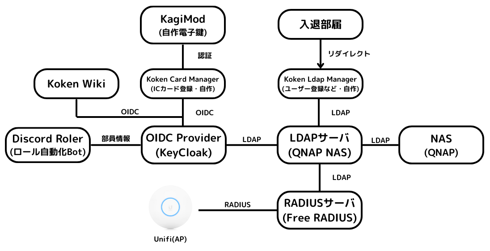
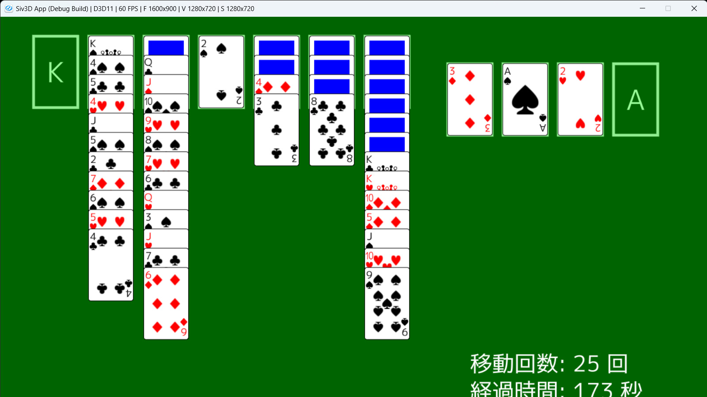
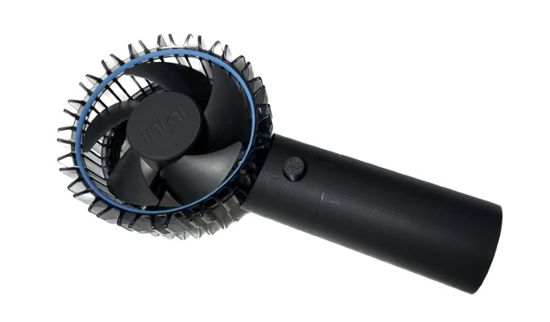

Works
部員が調布祭に向けて制作した作品一覧を掲載しています。
ソフトウェア
工研統合認証
Created by ぼいど
工研で利用するサービスを統合的に管理する認証システムを開発し、入部手続きを自動化しました。
jsを用いたzip、pngファイルの生成と圧縮、展開
Created by McbeEringi

任意のデータから無圧縮のzip、pngファイルを高速に生成します 比較的新しい環境であれば圧縮、展開も可能です
ユーコン
Created by ミコシバ
Siv3Dというフレームワークを使い、サンプルコードを改造して作ったトランプゲームです。 クロンダイクに似ていて、組み札にスートごと、AからKまで整理することができれば勝ちです。 また、表になっているカードは整列していなくてもまとめて動かすことができます。 追加したい機能はいろいろあったのですが間に合いませんでした。
リバーブプラグイン
Created by へるくん

近年加速している円安に抗うべく、JUCEフレームワークを用いて作成したVST3プラグインです。
ハードウェア
ATtiny85開発ボード
Created by McbeEringi

定番AVRマイコンATtiny85の開発基板です 一度ブートローダを書き込めばライター無しで開発できます。smd版はmicroUSBのケーブルに差し込んで使用します。
ATtiny202開発ボード
Created by McbeEringi

比較的新しいAVRであるATtiny202の開発基板です タクトスイッチ、LED、キャパシタ1.5F、スピーカ、serialupdi書込機が一枚の基板に載っており、すぐに開発を開始できます キャパシタにより電源のない場所でも数分程度のスピーカ駆動が可能です
4自由度四足歩行ロボット
Created by McbeEringi

ESP32C3を用いた四足歩行ロボットです WebSocketを用いた無線操縦を実装をしており、スマホでもブラウザから操縦可能です
電極式調理器
Created by らぼねこ

AC100Vに接続して食品に直接交流電流を流しジュール熱で調理する装置です。ホットケーキ4枚分の生地を15分程度でカステラのように焼き上げることができます。電圧計、電流計は出来上がりの目安になります。また、ブレーカーを装備しており、スイッチの代わりとしての役割と短絡などの際に電流を遮断する役割をもたせています。生地を入れる箱に設置する電極板にはチタンを採用し、食品に金属が溶け出さないよう配慮しています。
CPUクーラー改造ハンディファン
Created by ゆい
みんなつかってないリテールクーラーを再利用したかった
電光掲示板
Created by キータ（半角）、石川

市販のLEDパネルをマイコンで制御して列車の行先表示器を作りました! 主にプログラムをキータ(半角)が、画像素材を石川が担当しました